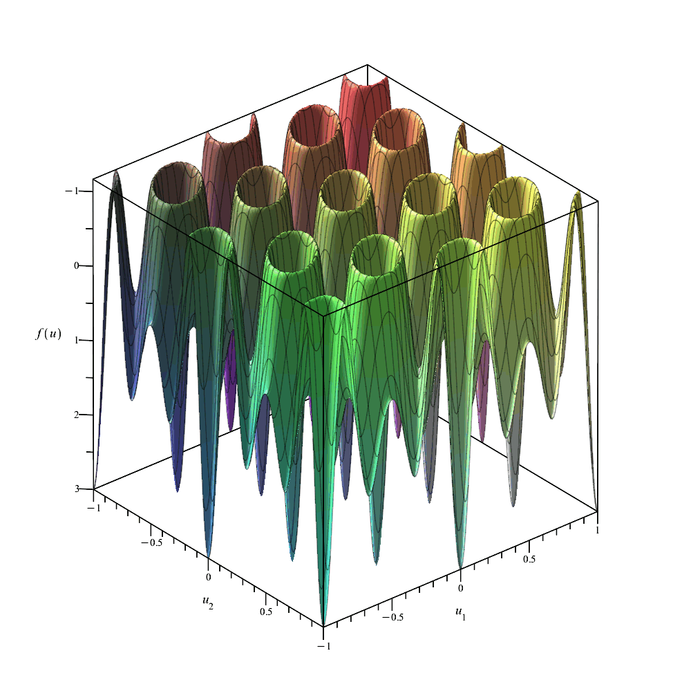
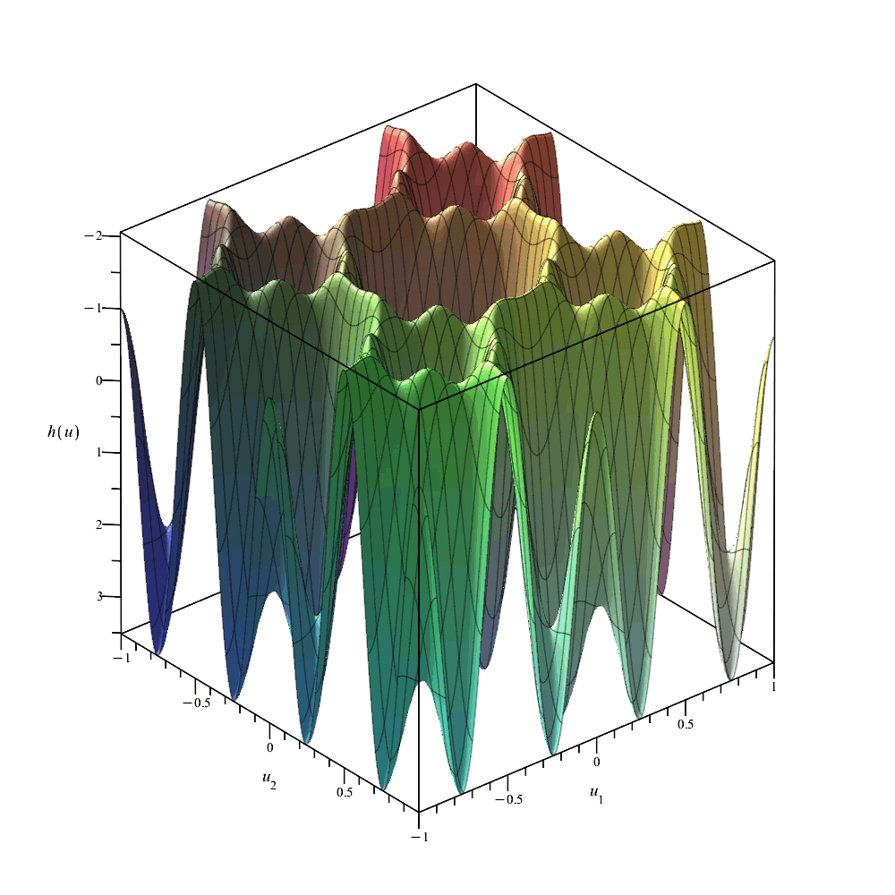
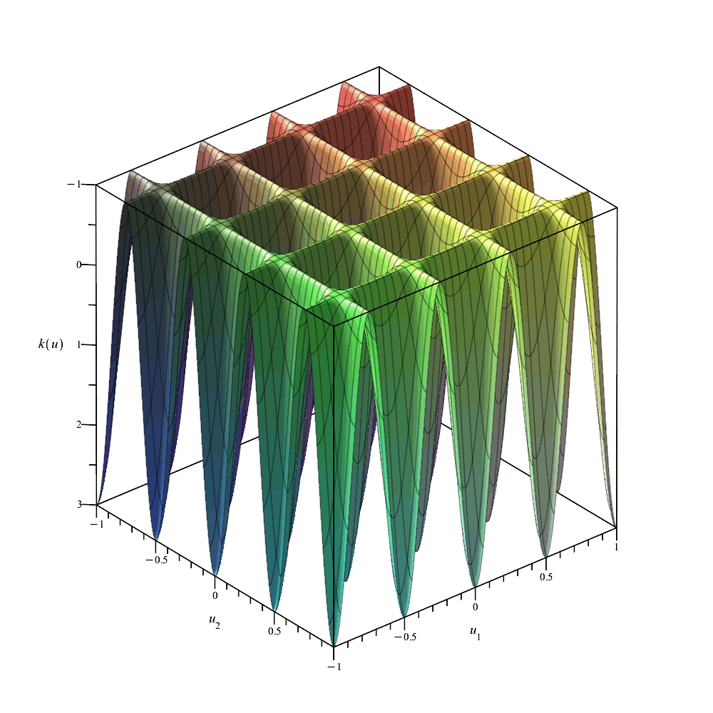

Example 3.9. (case study)
The following code visualizes the polynomials in the example and produces the SDP data as .csv files.
(Please read the Maple worksheet "generating_SDP_data" for instructions of how to produce and use the files in general.)
| > | Type,n := 'G',2; #type, dimension
f := TPoly(Type,[2,0]) + 2*TPoly(Type,[0,1]); #objective function in polynomial Chebyshev basis d:=max(DegreePoly(Type,n,f),RowDimension(THermiteMatrix(Type,n))); #order of relaxation (the smallest possible) GC:=GeneralizedCosine(Type,n,[u[1],u[2],-u[1]-u[2]]): F:=expand(subs([z[1]=GC[1],z[2]=GC[2]],f)): plot3d([F],u[1]=-1..1,u[2]=-1..1,grid=[200,200],orientation=[130,-60,180],labelfont=["TimesNewRoman", 15],labels=[u[1],u[2],'f(u)'],size=[1000,1000]); |
|  |
| > | #SDPMatrices(Type,n,d,"SDP_matrices_G_2_3.csv");
#SDPCoefficients(Type,n,d,f,"SDP_coefficients_f_3.csv"); |
| > | Type,n := 'G',2;
g:=2*TPoly(Type,[1,0]) + TPoly(Type,[0,1]) + TPoly(Type,[1,1]) + 4*TPoly(Type,[3,0]); d:=max(DegreePoly(Type,n,g),RowDimension(THermiteMatrix(Type,n))); #order of relaxation (the smallest possible) GC:=GeneralizedCosine(Type,n,[x,y,-x-y]): G:=expand(subs([z[1]=GC[1],z[2]=GC[2]],g)): plot3d([G],x=-1..1,y=-1..1,grid=[200,200],orientation=[130,-60,180],labelfont=["TimesNewRoman", 15],labels=['u[1]','u[2]','g(u)'],size=[1000,1000]); |
 |
| > | #SDPMatrices(Type,n,d,"SDP_matrices_G_2_3.csv"); #not necessary if already done for f
#SDPCoefficients(Type,n,d,g,"SDP_coefficients_g_3.csv"); |
| > | Type,n := 'C',2;
h:=2*TPoly(Type,[1,0]) + TPoly(Type,[0,1]) - TPoly(Type,[0,2]) - 3*TPoly(Type,[1,1]); d:=max(DegreePoly(Type,n,h),RowDimension(THermiteMatrix(Type,n))); #order of relaxation (the smallest possible) GC:=GeneralizedCosine(Type,n,[x,y]): H:=expand(subs([z[1]=GC[1],z[2]=GC[2]],h)): plot3d([H],x=-1..1,y=-1..1,grid=[200,200],orientation=[130,-60,180],labelfont=["TimesNewRoman", 15],labels=['u[1]','u[2]','h(u)'],size=[1000,1000]); |
|  |
| > | #SDPMatrices(Type,n,d,"SDP_matrices_C_2_2.csv");
#SDPCoefficients(Type,n,d,f,"SDP_coefficients_h_2.csv"); |
| > | Type,n := 'C',2;
k:=2*TPoly(Type,[2,0]) + TPoly(Type,[0,2]); d:=max(DegreePoly(Type,n,k),RowDimension(THermiteMatrix(Type,n))); #order of relaxation (the smallest possible) GC:=GeneralizedCosine(Type,n,[x,y]): K:=expand(subs([z[1]=GC[1],z[2]=GC[2]],k)): plot3d([K],x=-1..1,y=-1..1,grid=[200,200],orientation=[130,-60,180],labelfont=["TimesNewRoman", 15],labels=[u[1],u[2],'k(u)'],size=[1000,1000]); |
|  |
| > | #SDPMatrices(Type,n,d,"SDP_matrices_C_2_2.csv"); #not necessary f already done for h
#SDPCoefficients(Type,n,d,f,"SDP_coefficients_k_2.csv"); |